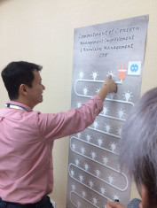

Jul
2018
Puninar Logistics featuring Ministry of Transportation of Republic Indonesia held a logistics discussion about Over Dimension Over Loading (ODOL) Solutions at The Westin Hotel, Jakarta. This event attended by 100 visitor with the main speaker, Mr Ahmad Yani (Safety Director of Ministry of Transportation of Republic Indonesia) and Mr Danilo Sunga (CMO of Puninar Logistics).
Over Dimension Over Loading for land logistics transport has cost the State up to IDR 43 Trillion per year. Beside that, ODOL can also endanger the safety and security of land transportation. Puninar Logistics has an ODOL solution to help all land transportation become safety and help the country to save the road repair budgets. Contact us for more info.
Pada tanggal 18 Februaru 2019, Salah satu anak perusahaan Puninar Group yaitu PT Puninar Mitra Abadi telah mendapatkan program penghargaan zero Loss Time Ach...
Dalam rangka merayakan 50 tahun perjalanan Puninar Logistics untuk melayani kebutuhan logistik di Indonesia yang jatuh pada tanggal 03 Februari 2019, maka ma...
At January 17, 2019, Puninar Logistics Founder and Chairman Eddy Korompis (center) is pictured in Jakarta on Thursday receiving a Lifetime Achievement...
Hati-hati terhadap informasi lowongan kerja yang beredar di social media atau akun lowongan kerja dengan mengatasnamakan PUNINA...
Puninar Logistics collaborated with "Balai Besar Pengembangan Latihan Kerja" Bekasi held the Second Batch of Puninar Apprentice Program . There are...
Puninar Logistics held a Go-Live Ceremony Warehouse Operation with Beko at Puninar Tanjung Priok Gateaway. Eddy Korompis (Puninar Chairman), Roby Kurniawan (...
Puninar Logistics collaborated with United Tractors (UT), where UT provides maintenance support for all UD Trucks units that Puninar Logistics has purchased ...
Kemeriahan hari kemerdekaan Republik Indonesia diadakan Puninar Logistics dan segenap karyawan satu hari sebelum hari Peringatannya yang jatuh pada tanggal 1...
Siapa yang tidak kenal dengan Theodore Permadi Rachmat atau TP Rachmat, sosok yang memutuskan untuk ‘istirahat’ dari Astra Group, kemudian merint...
Puninar Improvement Forum tahun ini diadakan pada tanggal 27 Juli 2018 di Hotel Santika Harapan Indah Bekasi. Yang berbeda di tahun ini adalah tidak ada pres...
Puninar Logistics featuring Ministry of Transportation of Republic Indonesia held a logistics discussion about Over Dimension Over Loading (ODOL) Solutions a...

In other to develop the automotive industry business in the filed f trucking and shipping, Puninar Logistics together with PT Indonesia Kendaraan Termi...
Puninar Group telah melakukan serangkaian audit management system ISO dan OHSAS di Bulan Maret 2018 dengan lingkup Pulog, Keppel, Fueller & Puninar Mitra...
Setiap tahunnya Puninar Logistics akan mengadakan selebrasi improvement tahunan, yaitu “Puninar Improvement Forum” yang diadakan di pertengahan b...
Balikpapan Mayor I Assistant, Syaiful Bahri (second from left) cutt the ribbon accompanied by Puninar Logistics CEO, Roby Kurniawan (second from right) at th...
Di tahun 2018 Puninar kembali merekrut Management Trainee baru dengan Program MT Star. Sebelumnya setiap tahun Puninar merekrut lulusan terbaik yang akan dit...
Setiap tanggal 21 April di Indonesia, masyarakat mengenal tanggal tersebut sebagai Hari Kartini, untuk mengenang jasa Raden Ajeng Kartini atas sosoknya yang ...
Pada 20 April 2018, PT. Puninar Infinite Raya mendapat penghargaan sebagai perusahaan logistic terbaik tahun 2017 di Kota Balikpapan. Penghargaan ini diberik...

Semangat melakukan improvement sudah dimulai diawal tahun 2018 ini. Pada tanggal 27 Maret 2018 lalu berlangsung Kick Off Improvement & Launching Website ... Kick Off Improvement & Launching Website Knowledge Management
Triputra Group pada tahun ini mengadakan Triputra Appreciation day 2018. Hal ini merupakan apresiasi bagi karyawan yang tidak hanya berperan sebagai sumber d...
Puninar kembali lagi mendapatkan kepercayaan sebagai Best Car Carrier Peformance (Inbound Operation) 2017 yang diberikan oleh PT. Toyota - Astra Mot...
Pembukaan office dan warehouse baru dari PIR (Puninar Infinite Raya) diresmikan di Banjarmasin pada tanggal 23 Januari 2018. Acara ini dihadiri oleh CEO Puni...

Puninar Logistics mengadakan pelatihan Safety Leadership pada tanggal 9 Januari 2018. Berdasarkan UU No. 1 Tahun 1970 tentang keselamatan kerja...
{kind=link}